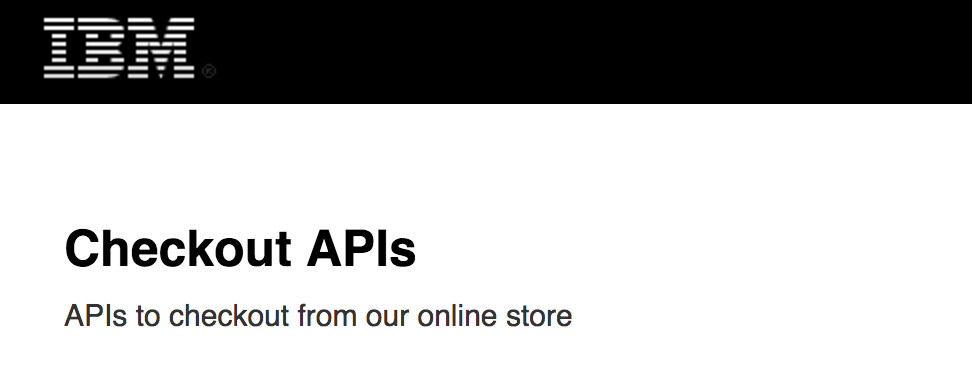
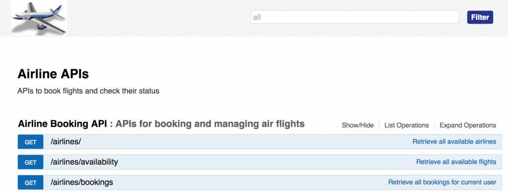
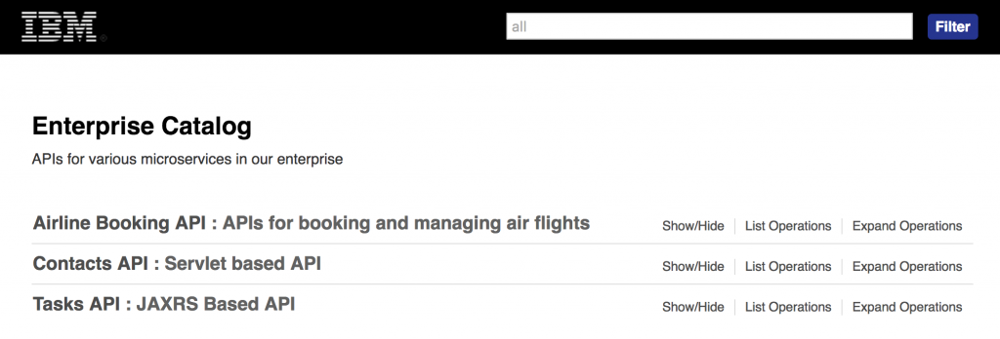

Since its release in late 2015, WebSphere Liberty’s API discovery has been adopted by many customers and stack products as a framework for exposing REST APIs. During that time the Open API Initiative was created, providing an official version (OpenAPI) of the former Swagger specification.
Usage patterns
There are different ways that customers are using this feature: developers love how easily they can see and test the APIs in the OpenAPI UI, and administrators really like that now they can integrate their systems APIs with API management frameworks, especially the API Connect bridge.
We started to see a pattern where customers were not only using this framework for development but for production as well. Some are using the API discovery framework as a dynamic catalog of the APIs they are exposing, while others just want a built-in UI for the APIs in their product or user extension bundles (e.g. WebSphere eXtreme Scale).
Because of this overwhelming external exposure of the framework, two requests for enhancements surged with many votes: the ability to access the UI and documents without SSL or basic authentication, and the ability to customize the look-and-feel of the UI.
Both of these requests have been implemented and are now available in Liberty 17.0.0.1! Let’s take a look at the new functionality.
Public API discovery
We have introduced two new endpoints, /api/explorer and /api/docs, both of which can be accessed without authentication using either HTTP or HTTPS. This means that consumers of your APIs can easily access the OpenAPI docs and ‘try out’ the endpoints without configuring SSL or being included in the basic registry. These endpoints are enabled by default and the api portion of the URL can be configured by using the new publicURL attribute, for example:
<apiDiscovery publicURL="cloud/apis" />
With the above configuration you would access the OpenAPI UI via the address http:///vm1:9080/cloud/apis/explorer without authentication. If you want to use the protected endpoint /ibm/api/explorer you would need to configure the appropriate security elements.
In the public UI, Liberty’s runtime endpoints, such as the JMX REST connector, API discovery, Batch, etc, do not appear – the purpose of the public UI is for you to expose your APIs.
We added the necessary attributes for you to control which APIs are made available in the public UI. If you want a particular application to remain only accessible via the protected endpoint /ibm/api/explorer, you can set its public attribute to false, for example:
<apiDiscovery publicURL="myAPI"> <webModuleDoc contextRoot="/MyApp" public="false" /> </apiDiscovery>
For more information, check out this page.
Customized master OpenAPI document and UI
You can now customize all aspects of the master OpenAPI document (e.g. the info element, host, basePath, scheme, etc). This change applies to the /docs endpoint as well as the /explorer endpoint, which means you can customize the title and description that appear in the UI. This customization can be done using an OpenAPI snippet that is referenced from the new swaggerDefinition attribute. Here’s an example:
<apiDiscovery swaggerDefinition="${server.config.dir}/custom/swaggerDef.yaml" />
This snippet document needs to follow the structure of the OpenAPI specification but it does not need to be complete on its own. For example, you could have a snippet such as:
--- swagger: '2.0' info: title: Checkout APIs description: APIs to checkout from our online store version: 2.1.0
You will see these changes propagating into the aggregated OpenAPI document:

And in the UI:

{kind=link}
We also have an optimization for single-application scenarios, in which the app’s OpenAPI doc (via annotations or pre-generated) becomes the ‘master doc’ automatically.
Here’s a snippet of an application that is overriding the title and description values using annotations:
@ApplicationPath("/")
@SwaggerDefinition(
info = @Info(description = "Service for booking and managing air flights",
version = "1.0.1",
title = "Airline Service"),
tags= {@Tag(name="Airline Booking API",
description="APIs for booking and managing air flights")})
public class JAXRSApp extends Application {
When the above application is deployed into Liberty, with no other sibling applications, it does not need to specify a swaggerDefinition attribute inside the server.xml.
Styling
The customization also extends to the explorer: users can now specify a CSS file that overrides the basic styling of the top of the explorer page, such as the logo and banner colour. This is done using a new extension field called x-ibm-css inside the info element. Just like info.title and info.description, the info.x-ibm.css attribute can be specified either from the swaggerDefinition attribute inside the server.xml or from annotations in a single-application scenario.
There are some restrictions on the CSS format, which are documented on the corresponding Knowledge Center page.
Here’s an example of a CSS override:
---
swagger: '2.0'
info:
title: Airline APIs
description: APIs to book flights and check their status
version: 2.1.0
x-ibm-css: "${server.config.dir}/custom/acme-banner.css"
Where acme-banner.css is a simple CSS file that inserts a new logo and changes the top banner’s background colour:
.swagger-section #header {
background-image: url(images/custom-logo.png);
background-repeat: no-repeat;
background-color: whitesmoke;
background-position-x: 28px;
padding-top: 20px;
padding-right: 0px;
padding-bottom: 30px;
padding-left: 5px;
}
The customized OpenAPI UI looks like this:

{kind=link}
Collective OpenAPI UI inline and Collective API registry
The Collective OpenAPI UI has been updated to display inline the APIs from all collective members, instead of grouping them by each member. This provides an ‘API first’ view of the APIs in the collective. There is also a public and customizable version of the Collective UI and docs at /api/collective/docs and /api/collective/explorer, working just like the single-server scenarios outlined above.
Here’s a screenshot of a collective OpenAPI UI that is displaying APIs from two collective members:

{kind=link}
As you can see from above, the APIs are displayed inline and have the same look-and-feel as a single server endpoint, even though it is displaying many different APIs from different remote servers. This is a pattern used by many companies when displaying OpenAPIs, an example being GoDaddy’s developer explorer.
We also have a new endpoint, /api/collective/registry, which lists all the APIs in the collective in a ‘service registry’ format, where only the core information about the API or service is displayed (title, description, version, and hosts that support this service). Here’s an example:
{kind=link}
For more information please check out this page.
Proxy support
To support Liberty instances behind a proxy, the OpenAPI UI and the OpenAPI docs endpoints have been updated to take into consideration HTTP headers such as Host and Referer when building its URLs. Previously the URLs would always point directly to the Liberty instance, which sometimes was in an internal IP address that could not be reached directly. Now, if there is a proxy in front of Liberty, that proxy URL is used!
Built-in CORS support
We made it easier to use the “Try it out” button in the collective OpenAPI by automatically configuring CORS between the collective controller’s UI and the collective member’s APIs. Previously users had to manually enter the CORS configuration into the server.xml of every collective member that they wanted to “Try it out” from the UI.
Try it out!
Now that you’re up to date on the new enhancements from API discovery it’s time to try it out!
Just download the latest Liberty runtime, run wlp/bin installUtility install apiDiscovery-1.0, add apiDiscovery-1.0 to your server.xml and start customizing your very own OpenAPI UI!